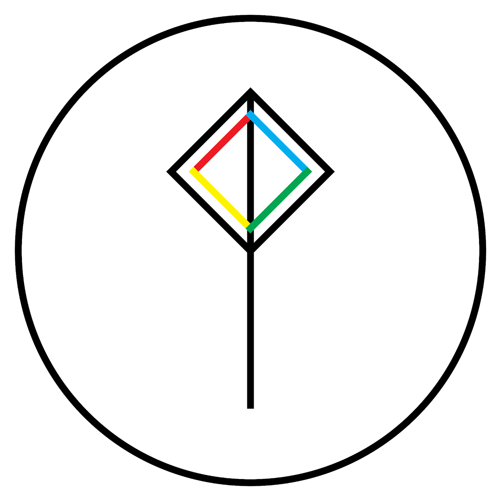
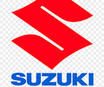
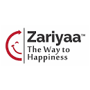

Professional Experience
HR & People Roles

Part-time HR • 2LYP Pvt Ltd (Startup)
Early-stage Startup • HR Operations & Talent Support
- Supported recruitment activities including posting roles, basic screening, and interview coordination for interns and entry-level hires.
- Helped with onboarding documentation and guided new joiners on company policies and work culture.
- Updated basic employee data such as attendance and contact details in HR records and spreadsheets.
- Assisted founders with routine HR queries and small employee engagement initiatives.

HR Intern • Padmaja Suzuki
Industrial HR Research • Employee Participation
- Conducted survey-based research on “Employee Satisfaction towards Workers’ Participation in Management”.
- Analyzed responses to identify drivers of satisfaction, participation, and communication gaps.
- Drafted recommendations to improve participative decision-making and worker–management relations.
Events & Operations
Event Planner & Live Technician • Nortic Events
Corporate & Academic Events
- Supported planning and execution of 10+ events ensuring smooth flow of sessions and activities.
- Managed AV setups (sound, projection, lighting) and resolved technical issues during live events.

Organizer & Volunteer • Zariyaa
Wellness Festivals & Corporate Well-being
- Helped organize wellness festivals and corporate programs related to health and stress management.
- Handled registrations, participant guidance, and basic logistics at the venue.